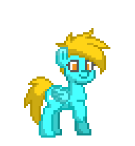
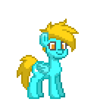
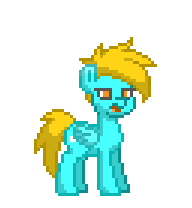
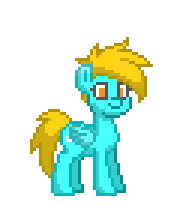
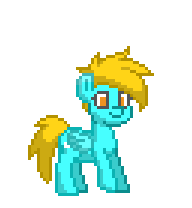
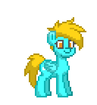

天蓝晨风 Skyblue
由原来的 Pony Town GIF 转换为本机 Codex Pet。空闲时站立约 5.94 秒、眨眼约 0.66 秒。拖拽触发左右飞行动作；鼠标悬停仍是 Codex 内置的跳跃行为。下方为单个状态循环预览，实际状态切换由 Codex 控制。
 空闲 · 站立快速眨眼
空闲 · 站立快速眨眼
 拖拽 · 向右飞行
拖拽 · 向右飞行
 拖拽 · 向左飞行
拖拽 · 向左飞行

打招呼

跳跃

失落 · 打哈欠

等待 · 抬蹄

工作中 · 跳舞

审阅 · 坐下起身